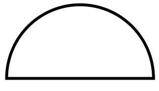

--A Simple View on a Blinded Reality--

May 15, 2016
There has always been a conflict between forced work, what you have to do, and lifestyle work, what you want to do. Many risks tend to start in one of these. Because essentially, taking risks is the process of wanting more of something. And usually we want more time for our lifestyle work and, consequently, neglect the forced work. Or vice v...